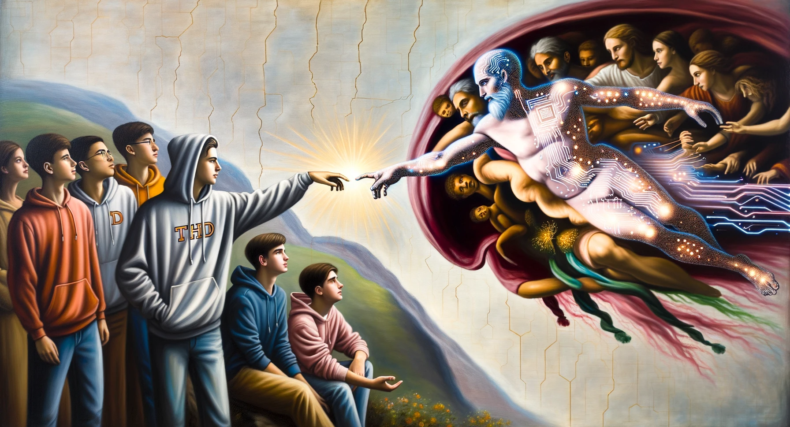
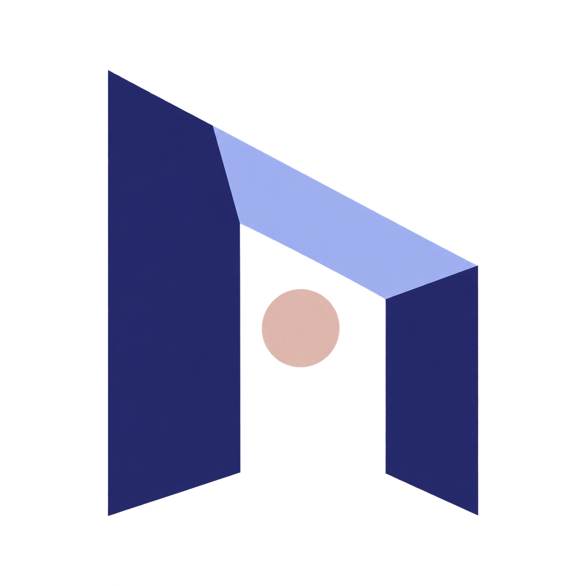
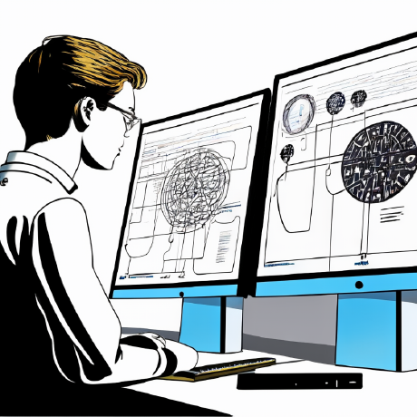

2023 / Original public profile
The first cohort profile imagined students reaching toward what they could make together. The original image is preserved unchanged.

THD AIShare your project ↗Earlier chapters / Visual history
THD AI began as a 2023 cohort experiment. The direction has changed, but the work that came before it still belongs in the story. These are preserved originals and the illustrations that followed.

The first cohort profile imagined students reaching toward what they could make together. The original image is preserved unchanged.
The early discussion hub paired collaborative learning with a painterly illustration.
A campus scene from the winter-semester calendar announcement. The schedule itself remains a dated historical record.

The organization’s original avatar, saved before the identity changed.
The initial THD AI typographic badge. Replaced by the open-portal symbol, and kept here as part of the process.
The approved public banner. Its soft campus light, lavender haze, and grey silhouettes set the direction for the current identity.
The member-workspace banner brings the same atmosphere indoors, around personal projects, collaboration, and coffee.
A new scene for showing work, asking questions, and finding people who care about the same things.
The original internal illustration and member documents stay in the private member archive. The first member-profile redesign is saved there as well. They have not been copied into this public page.
Open the member archive on GitHub ↗The complete public archive includes the calendar-release variant and earlier iceberg asset. Browse the original files and versioned archive, or visit the visual-history discussion. A SHA-256 manifest records the saved public files. Artwork credits and licences.